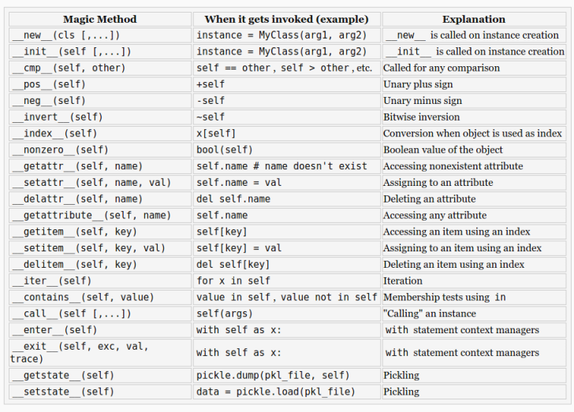

Object-oriented programming (OOP) is a programming paradigm based on the concept of objects, which are data structures that contain data, in the form of fields, often known as attributes; and code, in the form of procedures, often known as methods.
class Human_1(object): # definition of a class variable population = 0 def __init__(self, name): # definition of an instance variable self.name = name Human_1.population += 1 def say_hi(self): print("Hi, my name is {:}.".format(self.name)) # make an instance of a class jason = Human_1("Jason") jason.say_hi()
Hi, my name is Jason.
__init__()__del__()class Human_2(object): def __init__(self, name): self.name = name print("I can see the light!") def say_hi(self): print("Hi, my name is {:}.".format(self.name)) def __del__(self): print("Bye bye!") jason = Human_2("Jason") jason.say_hi() del jason
I can see the light! Hi, my name is Jason. Bye bye!
self as the first
argument for each method.In programming languages, encapsulation is used to refer to one of two related but distinct notions, and sometimes to the combination thereof:
__attrName, it can be referred to within
the class itself as self.__ attrName, but outside of the class, it is
named object._className__attrNameclass Human_3(object): def __init__(self, name, age): self.name = name self.__age = age jason = Human_3("Jason", 33) print("Name: {:}".format(jason.name)) print("Age: {:}".format(jason._Human_3__age)) # print("Age {:}".format(jason.age))
Name: Jason Age: 33
In object-oriented programming, inheritance is when an object or class is based on another object or class, using the same implementation (inheriting from a class) specifying implementation to maintain the same behavior (realizing an interface; inheriting behavior). A mechanism to transfer the characteristics of a class to other classes that are derived from it.
class Human_4(object): def __init__(self, name, age): self.name = name self.age = age def say_hi(self): print("Hi, my name is {:}".format(self.name)) class Student(Human_4): def say_hi(self): print("Hey, I'm {:} and {:}".format(self.name, self.age)) class Teacher(Human_4): def say_bye(self): print("Bye") jason = Student("Jason", 22) jason.say_hi() betty = Teacher("Betty", 44) betty.say_hi() betty.say_bye()
Hey, I'm Jason and 22 Hi, my name is Betty Bye
import math class Pizza(object): def __init__(self, radius): self.radius = radius def cf(self): return 2 * math.pi * self.radius def __str__(self): return "CF={:4.2f}".format(self.cf()) class Calzone(Pizza): def cf(self): c = super(Calzone, self).cf() return c / 2. + 2 * self.radius p = Pizza(10) print(p) p2 = Calzone(10) print(p2)
CF=62.83 CF=51.42
__str__(), __repr__(), __unicode__()__setattr__(), __getattr__(), __delattr__()Function overloading (or method overloading) is the ability to create multiple methods of the same name with different implementations. Calls to an overloaded function will run a specific implementation of that function appropriate to the context of the call, allowing one function call to perform different tasks depending on context.
def add_bullet(sprite, start, direction, speed): def add_bullet(sprite, start, headto, spead, acceleration): def add_bullet(sprite, curve, speed):
class A: def method_a(self, i=None): if i == None: print("first method") else: print("second method {:}".format(i))
In programming, operator overloading (less commonly known as operator ad hoc polymorphism) is a specific case of polymorphism, where different operators have different implementations depending on their arguments. Operator overloading is generally defined by the language, the programmer, or both.
import math class Vector(object): def __init__(self, *args): self.coords = args def __str__(self): return str(self.coords) def __add__(self, other): coords = tuple(map(sum, zip(self.coords, other.coords))) return Vector(*coords) def __getitem__(self, index): return self.coords[index] v1, v2 = Vector(2, 10), Vector(5, -2) print(v1 + v2) print(v2[1], v2.coords[1])
(7, 8) (-2, -2)
More information can be found in the Python documentation, some examples:
__pos__(), __neg__(), __inv__(), __abs__(), __len__()__add__(), __sub__(), __and__(), __or__(), __xor__(), …self argument and don't require you to instantiate
the class before using themclass Human_5(object): population = 0 def __init__(self, name): self.name = name Human_5.population += 1 @staticmethod def how_many(): print("Population: {:}".format(Human_5.population)) def __del__(self): type(self).population -= 1 jason = Human_5("Jason") betty = Human_5("Betty") jason.how_many() robin = Human_5("Robin") Human_5.how_many()
Population: 2 Population: 3
The name of the concept refers to the duck test, attributed to James Whitcomb Riley, which may be phrased as follows:
"When I see a bird that walks like a duck and swims like a duck and quacks like a duck, I call that bird a duck."
class Duck(object): def quack(self): print("Quack, quack!") def fly(self): print("Flap, Flap!") class Person(object): def quack(self): print("I'm Quackin'!") def fly(self): print("I'm Flyin'!") def in_the_forest(mallard): mallard.quack() mallard.fly() in_the_forest(Duck()) in_the_forest(Person())
Quack, quack! Flap, Flap! I'm Quackin'! I'm Flyin'!
__dict____doc____name____module____bases__class Employee(object): """ Class docstring. """ def __init__(self, name, salary): self.name = name self.salary = salary print("Employee.__doc__:", Employee.__doc__) print("Employee.__name__:", Employee.__name__) print("Employee.__module__:", Employee.__module__) print("Employee.__bases__:", Employee.__bases__) print("Employee.__dict__: ", Employee.__dict__)
('Employee.__doc__:', '\n Class docstring.\n ')
('Employee.__name__:', 'Employee')
('Employee.__module__:', '__main__')
('Employee.__bases__:', (<type 'object'>,))
('Employee.__dict__: ', dict_proxy({'__dict__': <attribute '__dict__' of 'Employee' objects>, '__module__': '__main__', '__weakref__': <attribute '__weakref__' of 'Employee' objects>, '__doc__': '\n Class docstring.\n ', '__init__': <function __init__ at 0x7f6ceeed51b8>}))
issubclass(sub,sup), isinstance(obj, Class), …class SubClassName (ParentClass1[, ParentClass2, ...])Python 3 book
Python magic methods

Create a python module implementing
class Shape(object)
class Rectangle(Shape)
class Circle(Shape)